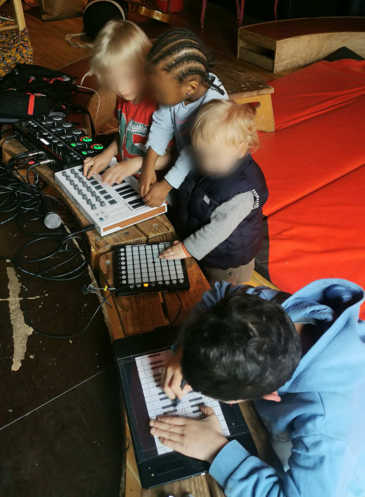

Éveil électroacoustique
Atelier d'initiation à la musique électronique à destination des 2-10 ans (sans écrans)

Cet atelier offre une expérience immersive et ludique où les plus jeunes peuvent découvrir et explorer différents instruments de musiques électroniques.
Qu'est-ce que la Musique Électroacoustique ?
La musique électroacoustique est un genre musical qui combine des sons acoustiques traditionnels avec des sons électroniques générés par des synthétiseurs. Cette fusion crée des paysages sonores innovants et captivants qui stimulent l'imagination et la créativité des enfants.
Objectifs de l'Atelier :
- Éveiller la Curiosité Musicale : Encourager les enfants à explorer différents types de sons et à développer une sensibilité musicale dès le plus jeune âge.
- Stimuler la Créativité : Permettre aux enfants de créer leurs propres compositions sonores en utilisant des instruments simples et des dispositifs électroniques adaptés.
- Favoriser l'Expression : Offrir un espace où les enfants peuvent exprimer librement leurs émotions et leurs idées à travers la musique.
Déroulement de l'Atelier :
- 1. Accueil et Présentation : Nous commençons par une petite introduction où les enfants et leurs parents sont accueillis. Nous présentons brièvement les instruments et les équipements électroniques que nous utiliserons pendant l'atelier.
- 2. Découverte des Sons : Les enfants explorent différents instruments acoustiques (tambours, xylophones, maracas) et des dispositifs électroniques simples (boîtes à rythmes, petits synthétiseurs). Ils apprennent à reconnaître les sons qu'ils produisent.
- 3. Atelier de Composition : Les enfants sont encouragés à créer leurs propres morceaux en mélangeant sons acoustiques et électroniques. Ils peuvent expérimenter avec des boucles sonores, des effets et des enregistrements simples.
- 4. Moment de Détente : Pour finir, nous organisons un moment de relaxation musicale où les enfants peuvent écouter une composition électroacoustique apaisante, permettant de clôturer l'atelier sur une note calme et sereine.